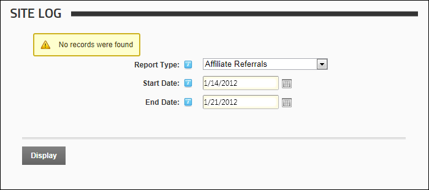

Affiliate Referrals Report
The Affiliate Referrals report tracks referrals from affiliates that include an affiliate ID = number in the URL to your site.
Report Fields:
- Affiliate Id: The ID number of the affiliate
- Requests: Number of requests associated with this affiliate
- Last Referral: Date and time when the last referral occurred

The Affiliate Referrals Report